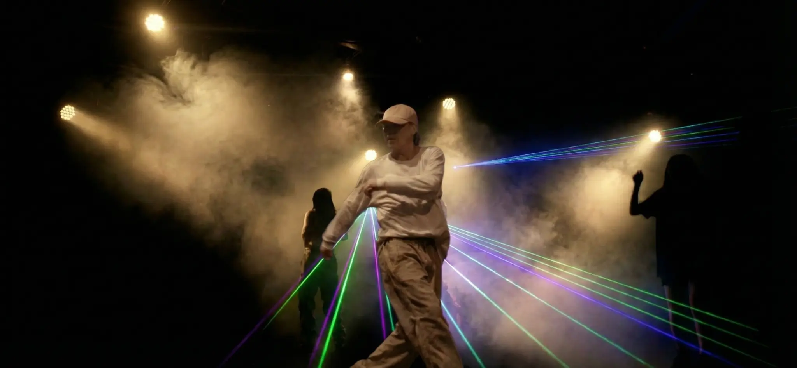
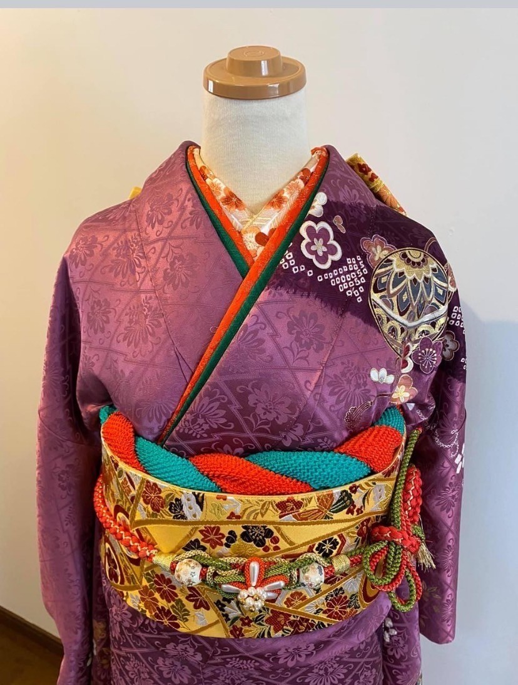

01 / Sense
体験としての
体験としての
デザイン。
レイアウトは、紙や画面の上の配置だけではありません。読み手がどこで立ち止まり、どこに視線を動かし、どの順番で理解するか。その流れは、空間体験に近いものです。
02 / Dance
身体で
身体で
表現する。
ハウス＆ヒップホップダンサーとして、大規模ダンスイベント「ESSP（East Side Spring Party）」に三年連続で出演。身体で表現する経験は、デザインを静止画ではなく、動きと間合いのある体験として考える感覚につながっています。



03 / Culture
所作と
所作と
着装文化。
日本着装百合の会 師範免許を取得。着装文化への関心は、装飾としての和ではなく、姿勢、所作、手順、相手への見え方まで含めた設計感覚として捉えています。



本ページは、ProfileのSpace / Experienceカードからの着地先として、旧プロフィールページの身体性・文化性の情報を整理し直したものです。